Mistrovství Evropy U19 v Krakově končíme vítězně
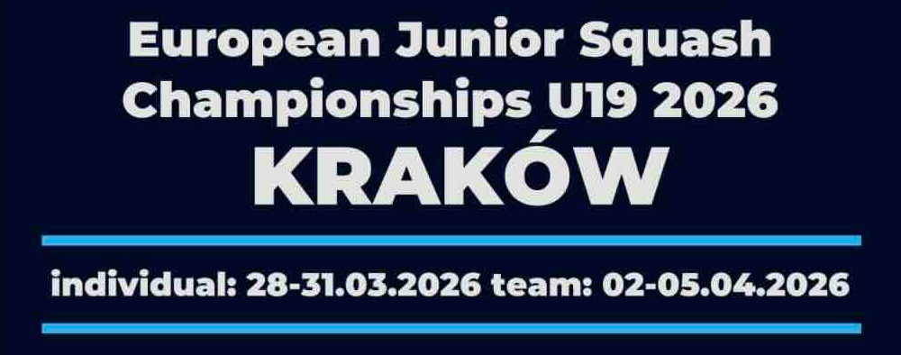
Individuální mistrovství Evropy v Krakově zakončili naši hráči vítězně, Anetka I Ella porazily své protihráčky, Vojtovi soupeř skrečoval.
Aneta nastoupila proti Ukrajince Anně Tarasové,
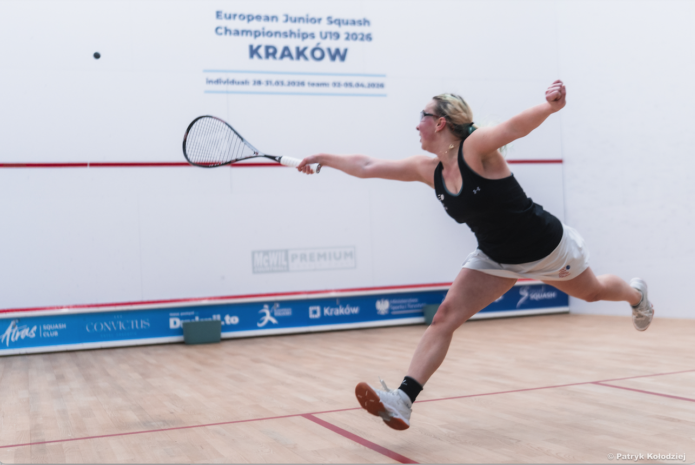
která má pověst bojovné a hlučné hráčky. Poslední den mistrovství se ale na hráčích už asi podepisuje únava, protože v první set Anetce vyloženě dala a odchodila ho. To ale někdy bývá záludné na soustředění a přesně to se stalo. Ve druhém setu Anna něco trefila, pak zase vzdala, pak začala hrát a Anet se nedostávala do tempa a začala kazit. Naštěstí v dalších sete měla víc vůle vyhrát Aneta a zakončila mistrovství Evropy výhrou 3/1.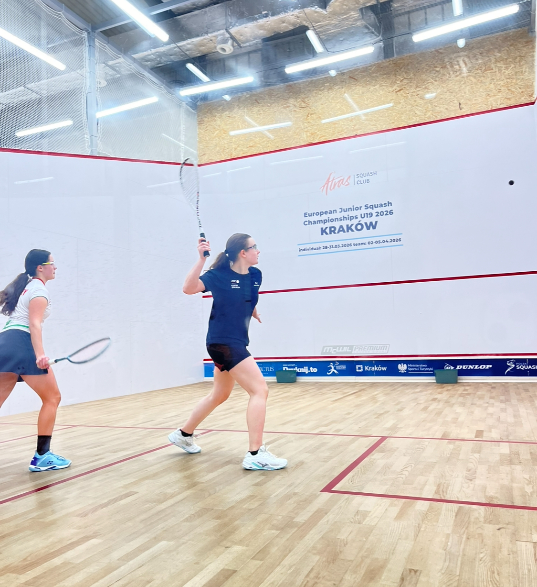
Poslední zápas Elly byl proti Maďarce Flóře Dévényi. Z vítězství 3/0 měla velkou radost a ačkoli skóre vypadá jasně, nebylo to lehké utkání. V každém setu musela Ella otáčet nepříznivé skóre, ale nevzdávala se a věřila zvolené strategii, která nakonec vždy začala fungovat.11. místo Vojtěch Martinovský
13. místo Aneta Sezemská
27. místo Ella Pelikánová
Kompletní výsledky najdete na Tournamentsoftware.
3. den:
Třetí den hráli všichni naši hráči na mistrovství Evropy v platech o umístění a všichni měli po jednom zápasu, Elle soupeřka jedno utkání skrečovala.
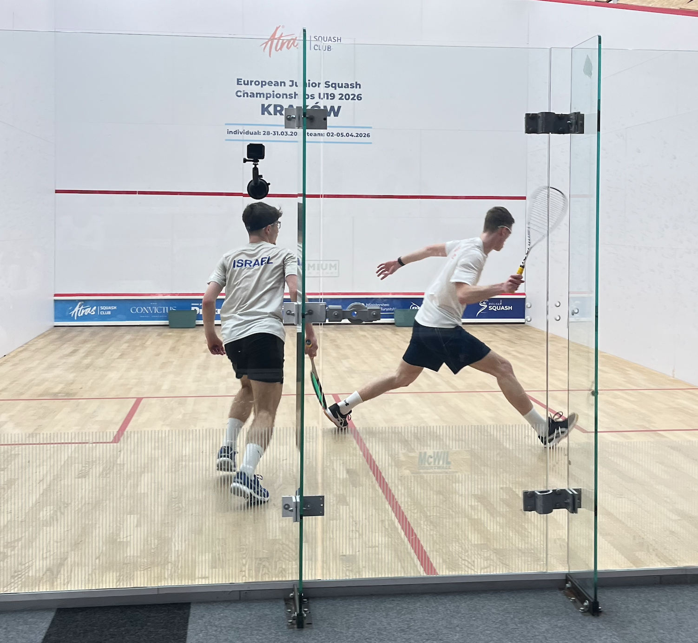
Vojta věděl, že na něj čeká těžký soupeř a snažil se ze včerejší prohry oklepat a nastoupit dnes k zápasu pozitivně. Začátek byl opět dobrý, ale vývoj byl podobný jako včera. Vojta v závěrech setů nedokázal udržet taktiku a kvalitu hry až do konce a poslední den mistrovství tak bude hrát o 11. místo s dalším Izraelcem.Po tomto utkání jsme měli chvíli pauzu a Aneta i Ella měly hrát ve stejný čas od 19:20. Naštěstí :-) se jeden kurt zpozdil a nejprve tedy hrála Ella
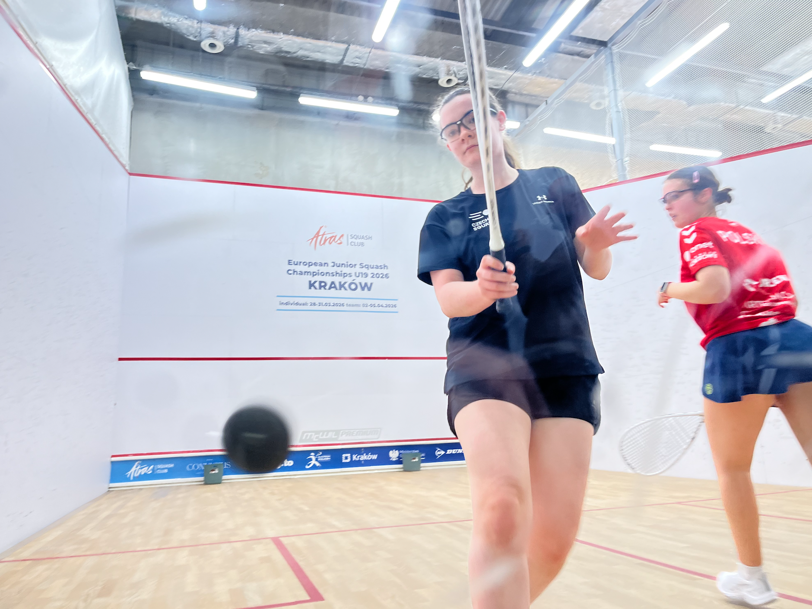
, až pak Anet. Ella se své razantní soupeřky trochu obávala, měla v paměti dávnou prohru. Dnes jí ale rychlá hra soupeřky sedla a dala do toho vše. V prvním setu ji soupeřka ještě trápila rychlými boasty, ale ty se jí potom podařilo eliminovat zlepšením délky základních úderů a v tiebreaku srovnala na 1/1. Další set došel opět až do tiebreaku, ale Elle chybělo trochu štěstí k jeho zisku. Tři sety v rychlém tempu si však vybraly svou daň a Elle došly fyzické síly :-( čtvrtý byl jasně v režii soupeřky, která se opět dostala k drtivým boastům na které naše hráčka už nedokázala reagovat. Ella si tak poslední den zahraje s Maďarkou o 27. místo.Poslední zápas dne byl na Anetě. S Ofri nerada hraje a první set byl takový zmatený squash pře
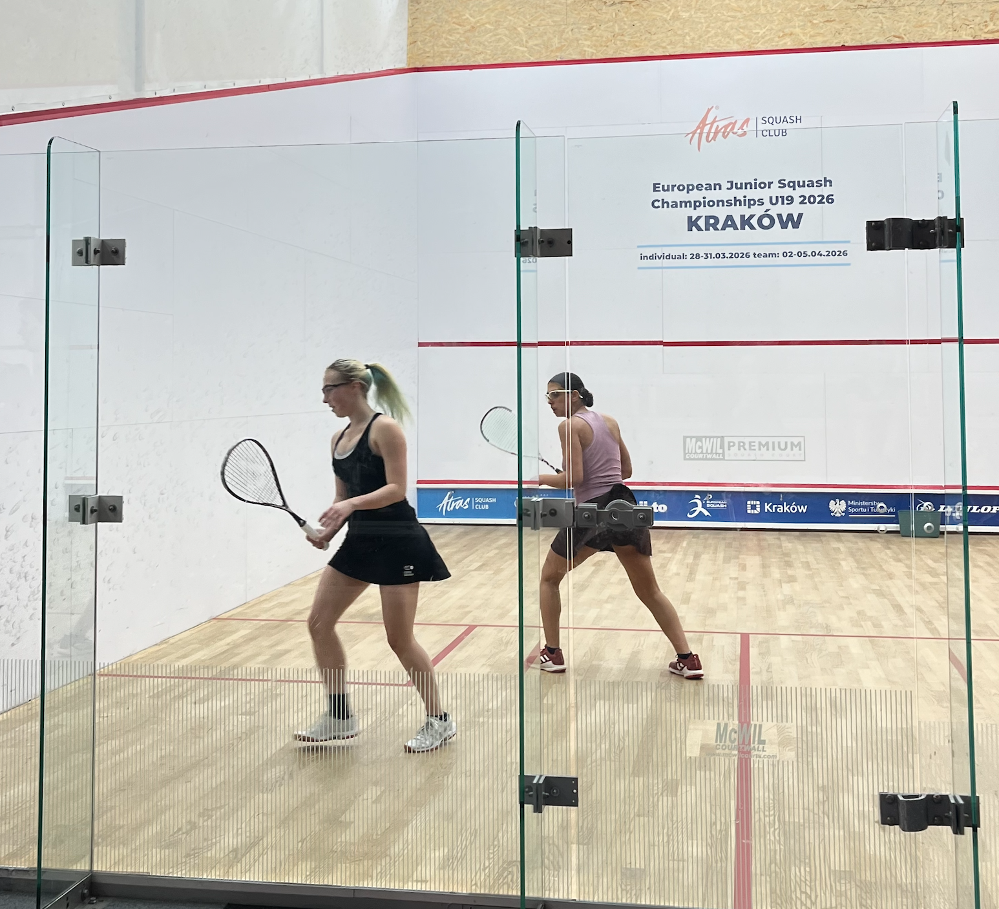
sně v režii Ofri, Anet chvíli trvalo než se na kurtu zorientovala. Od druhého setu, ačkoli jsme viděli dva tiebreaky, se Anet dařilo zklidňovat hru a šla si pro vítězství, nenechala se strhnout přestřelkou která sedí víc soupeřce. Pomohly opět i lobové servisy a změny tempa hry a výhrou se Aneta posunula do posledního zápasu o celkové 13. místo.V úterý je tedy poslední hrací den soutěže jednotlivců, hráče potom čeká den volna a od čtvrtku se hraje soutěž smíšených družstev. Nasazení i rozlosování do skupin již známe, náš tým ve složení Aneta Sezemská, Denisa Otáhalová, Adéla Bendová, Vojtěch Martinovský, Adam Burget a Martin Jašek jsou nasazení na pozici 8 a šampionát rozehrají ve skupině A, kde jsou společně s obhájci titulu z Francie a se Skotskem.
Úterý:
11:20 (kurt 5) [9/12] Aneta Sezemská vs [17/24] Anna Tarasova (UKR)
12:00 (kurt 2) [25/32] Ella Pelikánová vs [25/32] Flóra Dévényi (HUN)
13:20 (kurt 5) [7/8] Vojtěch Martinovský vs [13/16] Tamir Wiegenfeld (ISR)
Důležité informace o šampionátu najdete na stránkách mistrovství ZDE.
Výsledkový servis je tradičně na Tournamentsoftware, livescore najdete ZDE a stream ze všech 6 kurtů (hraje se na 5 tradičních kurtech a jednom skleněném) je na YouTube Polski Squash, ze 4 kurtů jej najdete na esfsquash.tv.
2. den:
Dnešní den na mistrovství Evropy nebyl tak veselý jako ten první, výhry jsme se dočkali až v samotném závěru dne. Nejprve nás čekaly zápasy o postup do čtvrtfinále, Aneta proti Sianě Zhilevě z Bulharska a Vojta proti Gabrielovi Chakovi z Anglie.
Anetě se nepodařilo dobře zachytit začátek zápasu proti razantně hrající Bulharce. Takovou hru sice očekávala, se Sianou se znají, ovšem nedokázala v tlaku dobře korigovat délku úderů a mnoho z nich bylo krátkých, čímž soupeřce nahrávala. Ve druhém setu Aneta svou hru zpřesnila a dařilo se jí dostávat se před svou soupeřku, ale na zisk setu to těsně nestačilo a ve třetím setu si postup Bulharka již nenechala vzít. Aneta tak šla, stejně jako na minulém mistrovství, do platu o 9. místo a hned večer odehrála další zápas. Opět proti podobně razantní soupeřce, Ciaře Boulanger z Francie. Už v průběhu prvního setu bylo jasné, že v té rychlé hře má Ciara navrch a museli jsme upravit taktiku. Anetka zvolnila, hodně lobovala a dostávala tím soupeřku za sebe a výrazně pod tlak, protože ta se chtěla držet své razantní hry a kupila jednu chybu za druhou. Anetka otočila vývoj zápasu a vedla 2/1 na sety. Bylo to však hodně fyzicky náročné, a to se projevilo v závěrečném pátém setu.
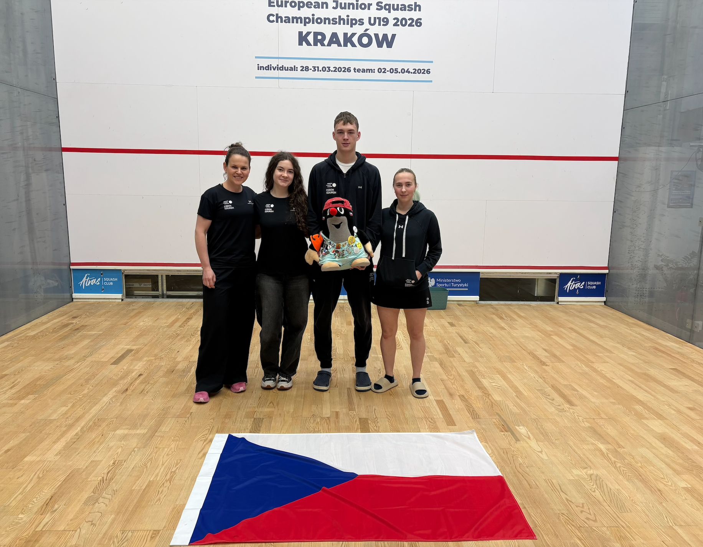
Ciara se stále snažila naši hráčku přetlačit silou a bohužel s narůstající únavou už nebyly Anetky loby tak přesné a dávala Ciaře šance k přesným útokům. Po prohraném pětiseťáku Anet čeká v pondělí večer Ofri Maliach z Izraele.Vojta nastoupil hned po Anetě na stejném kurtu. Vstup do zápasu byl ve volnějším tempu od obou hráčů, jakoby Angličan testoval co může čekat. Vojta byl ten, kdo víc tvořil hru a první set získal, od druhého setu se již hrálo ve vyšším tempu. Vojtovi to vyhovovalo, často byl před hráčem a tvořil si příležitosti, ale Gabriel trpělivě pokračoval ve výměnách a byl to nakonec Vojta, kdo často poslal míček do tinu. Mnoho nevynucených chyb a ztráta koncentrace v koncovkách setů jej stála následující tři sety a šanci na postup do čtvrtfinále. Vojta tak také dál hraje v platu o 9. místo a také jej večer čekal druhý zápas. V tom na něm byla stále znát frustrace z předchozího utkání, ale dokázal se 'přemluvit' k výkonu a výhře 3/0 nad Rasmusem Eliassonem ze Švédska.
Ella měla dnes pouze jeden zápas s Emmou Bozhilovou z Bulharska. První set byl vyrovnaný, ale soupeřka tam našla velkou zbraň na Ellu. Trápila ji rychlými boasty z forehandu a ačkoli se Ella snažila této kombinaci vyvarovat a při dobré délce lajny se to dařilo, nedokázala v tom být konzistentní po celou dobu utkání. Po prohře ji zítra večer čeká zápas o 25.-28. místo, ale svou soupeřku se dozví až po odehrání utkání mezi Alinou Raisenauer a Wiktorií Grodzkou.
Pondělí:
16:00 (kurt 5) [7/8] Vojtěch Martinovský vs [5/6] Elad Robenshtok (ISR)
19:20 (kurt 5) [9/12] Aneta Sezemská vs [13/16] Ofri Maliach (ISR)
19:20 (kurt 1) [25/32] Ella Pelikánová vs [17/24] Wiktoria Grodzka (POL)
Důležité informace o šampionátu najdete na stránkách mistrovství ZDE.
Výsledkový servis je tradičně na Tournamentsoftware, livescore najdete ZDE a stream ze všech 6 kurtů (hraje se na 5 tradičních kurtech a jednom skleněném) je na YouTube Polski Squash, ze 4 kurtů jej najdete na esfsquash.tv.
1. den:
První den na mistrovství Evropy juniorů do 19 let je za námi, připsali jsme 4 výhry a jednu prohru.
Den jsme zahájili lehkým tréninkem po kterém už následovalo slavnostní zahájení šampionátu. Vlajkonošem naší výpravy byl Vojta Martinovský, všichni hráči se sešli u skleněného kurtu a v 10:00 vše začalo.
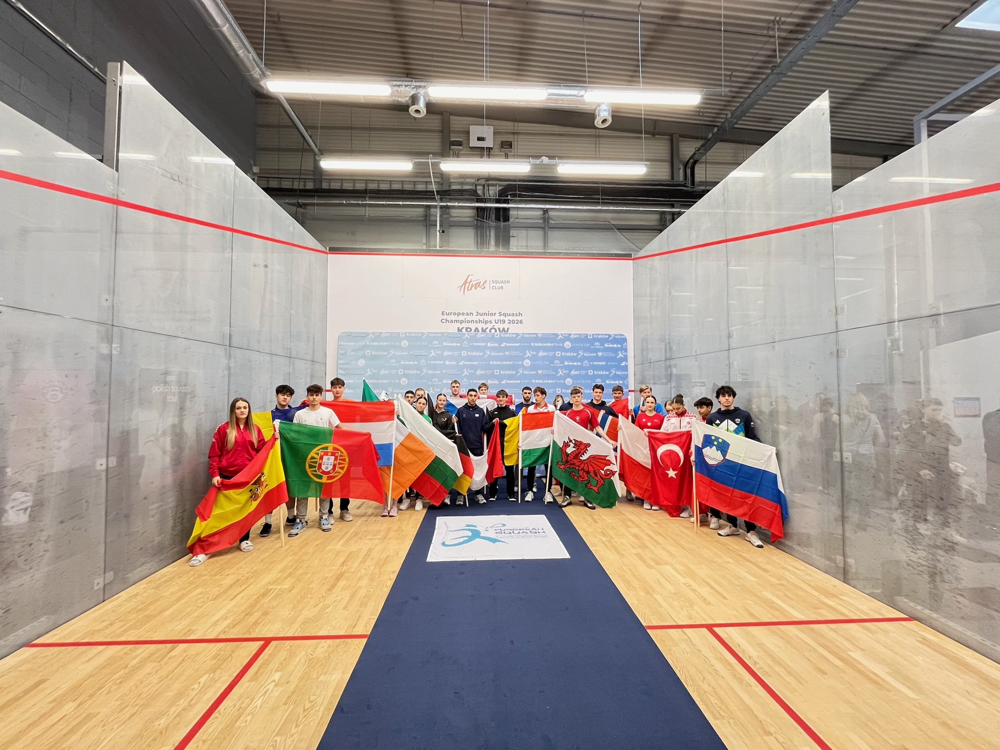
Jako první šla na kurt Ella Pelikánová proti soupeřce ze Španělska, kterou nikdo z nás neznal. Prvotní nervozita z
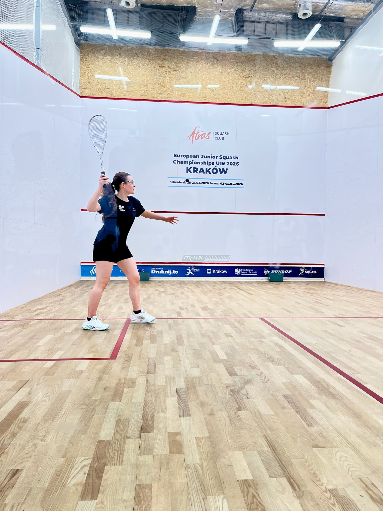
Elly rychle spadla a svou soupeřku jasně přejela, na kurtu se nezdržela ani 15 minut. Postoupila tak do druhého kola, kde na ni čekala o poznání těžší soupeřka. Reka Kemecsei z Anglie je nasazenou 3/4 hráčkou mistrovství. Ella se v utkání proti favoritce držela, snažila se nedělat nevynucené chyby a odvracet rychlou a útočnou hru Reky, ale musela smeknout před výbornou hrou Angličanky. Pokračovat tak bude v platu o 17. místo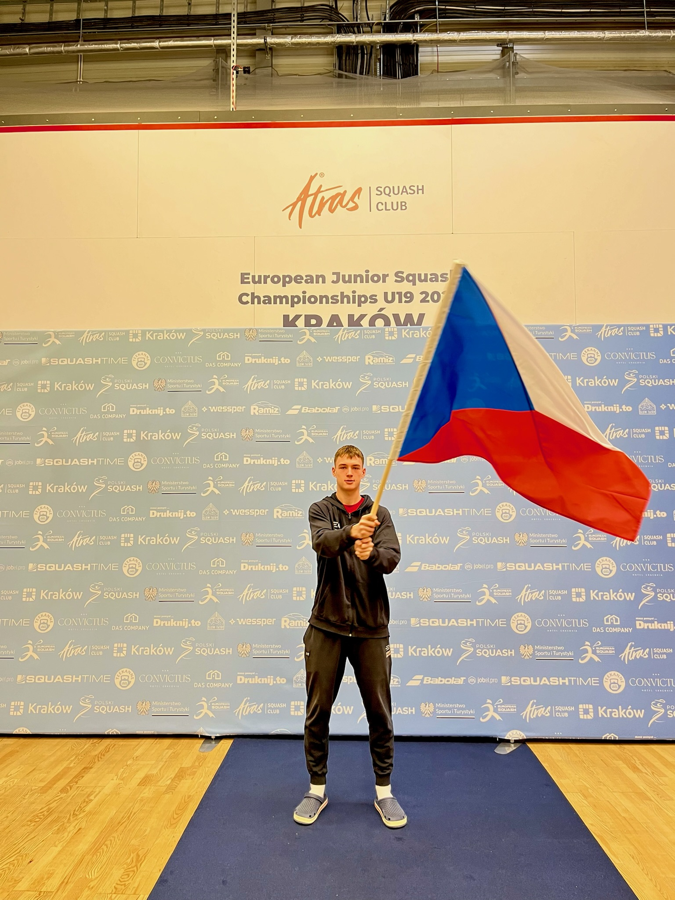
Vojta měl v úvodní den také dva zápasy a oba zvládl ve třech setech. Trochu se ze začátku v prvním utkání se Samuelem Kamphuysem (NED) pral sám se sebou a déle si na kurty zvykal, ale ve večerním utkání s Giladem Wiegenfeldem (ISR) už to bylo o něco lepší a věříme, že v neděli bude Vojta na kurtu už jako doma. Čeká jej utkání o postup do čtvrtfinále s Angličanem Gabrielem Chakem od 13:20 na kurtu 4.Anet měla jako jediná z našich reprezentantů první kolo volné a na svůj zápas tak čekala až do večera. To bylo trochu nevýhodou, nastoupila proti rozehrané Cassy Lincou,
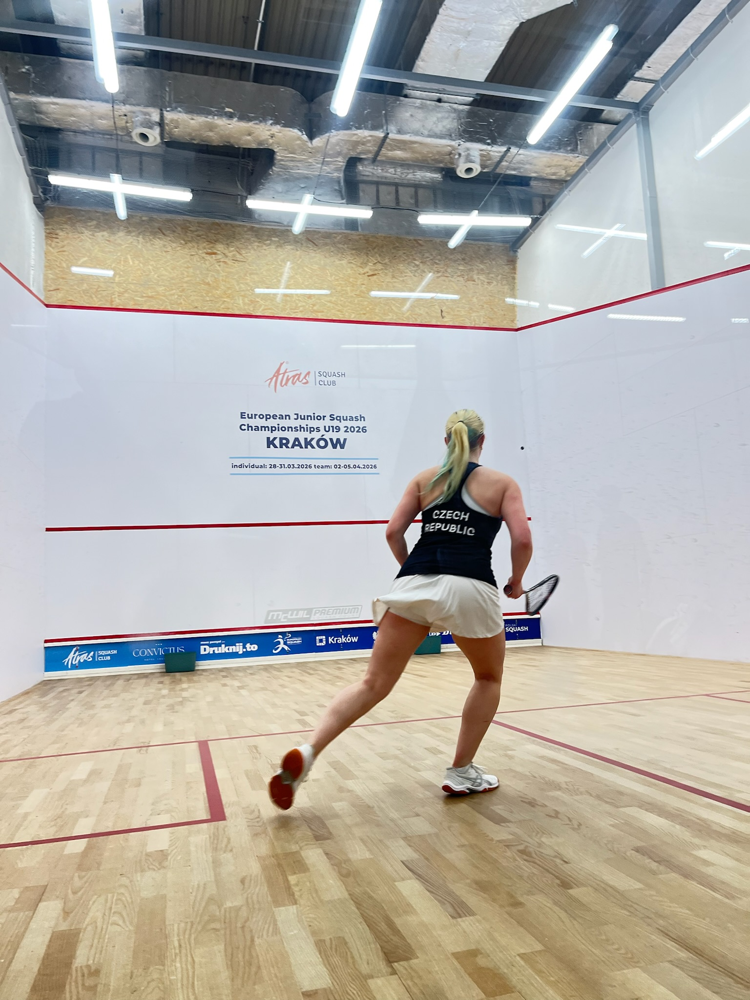
která do zápasu vletěla se svou útočnou hrou a přesnými dropy. Ačkoli byl první set vyrovnaný, získala jej soupeřka. Druhý v koncovce těsně získala Anet a srovnala na 1/1. Bylo vidět, že se Aneta rozhýbala, zlepšila délku základní hry a také začala soupeřce měnit tempo. Ve třetím setu také perfektně zafungoval lobový servis a Anet se ujala vedení 2/1. Bohužel se tento trend nepodařilo udržet, Cassy zabojovala a Anet opět začala trápit přesnost úderů, což Cassy trestala. Kupily se také nevynucené chyby a stav se srovnal na 2/2. V rozhodujícím setu naštěstí Anet opět vše sedlo. Musela se hecnout, necítila se už dobře fyzicky, ale pomohla i soupeřka svými chybami. Vybojovaný postup mezi nejlepších 16, v neděli od 12:40 hraje Aneta se Sianou Zhilevou (BUL) o postup do čtvrtfinále.Neděle:
12:40 (kurt 4) [9/12] Aneta Sezemská vs [7/8] Siana Zhileva (BUL)
13:20 (kurt 4) [7/8] Vojtěch Martinovský vs [9/12] Gabriel Chak (ENG)
14:40 (kurt 3) [25/32] Ella Pelikánová vs Emma Bozhilova (BUL)
Důležité informace o šampionátu najdete na stránkách mistrovství ZDE.
Výsledkový servis je tradičně na Tournamentsoftware, livescore najdete ZDE a stream ze všech 6 kurtů (hraje se na 5 tradičních kurtech a jednom skleněném) je na YouTube Polski Squash, ze 4 kurtů jej najdete na esfsquash.tv.
Před mistrovstvím:
Je to tu, v polském Krakově startuje od soboty 28.3.2026 individuální a týmové mistrovství Evropy juniorů do 19 let. Naši hráči jsou již na místě, tradičně se první čtyři dny hraje soutěž jednotlivců a po dni volna navazuje mistrovství smíšených týmů. Máme za sebou trénink, seznámení se s prostředím a všichni se těší na zítřejší slavnostní zahájení, které proběhne na skleněném kurtu v 9:40.
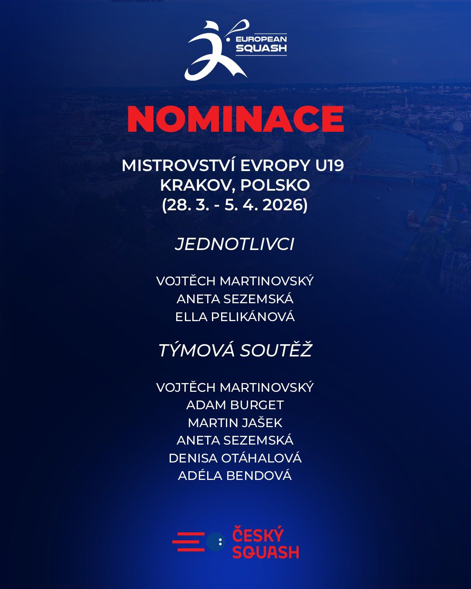
Na individuálním šampionátu nás reprezentují Ella Pelikánová, Aneta Sezemská (nasazená 9/12) a Vojtěch Martinovský (nasazený 7/8). V týmové soutěži, která se i v tomto roce hraje ve formátu 2 dívky a 2 chlapci, nás budou reprezentovat Aneta Sezemská, Denisa Otáhalová, Adéla Bendová, Vojtěch Martinovský, Adam Burget a Martin Jašek. Nesmíme zapomenout ani na Krtka, který je již také na místě a netrpělivě vyhlíží první zítřejší zápas. Jako první půjde fandit na utkání Elly Pelikánové, která bude na kurtu 2 hrát od 10:40 proti Eleně Gonzáles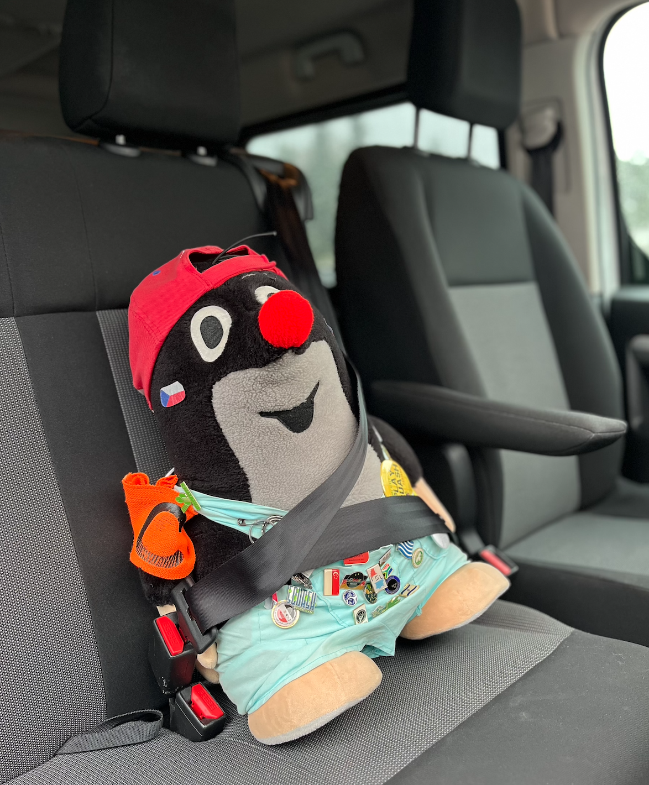
Dominguez ze Španělska. Poté si půjde dát pauzičku a nachystá vlajku před kurt 4, kde od 14:40 nastoupí Vojta Martinovský proti Samuelovi Kamphuysovi z Nizozemí. Anet Sezemská má první kolo volné, ráno ji čeká pouze trénink a poté půjde omrknout potenciální soupeřky, s vítězkou zápasu mezi Zoe Yeomans (IRL) a Cassy Lincou (FRA) pak nastoupí v 18:00 na kurtu 2.Důležité informace o šampionátu najdete na stránkách mistrovství ZDE.
Výsledkový servis je tradičně na Tournamentsoftware, stream ze všech 6 kurtů (hraje se na 5 tradičních kurtech a jednom skleněném) je na YouTube Polski Squash, ze 4 kurtů jej najdete na esfsquash.tv.
ČASQ.